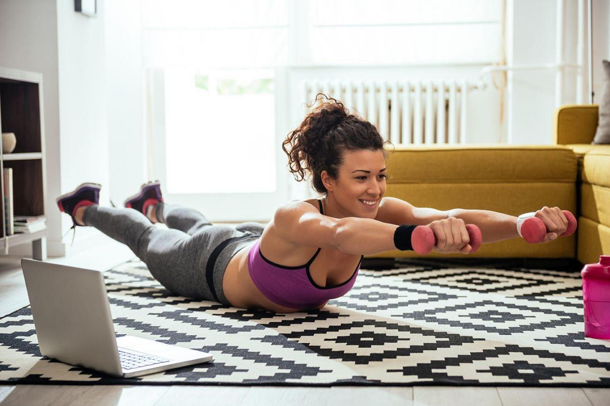
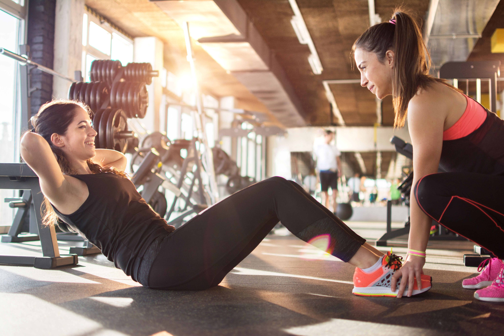
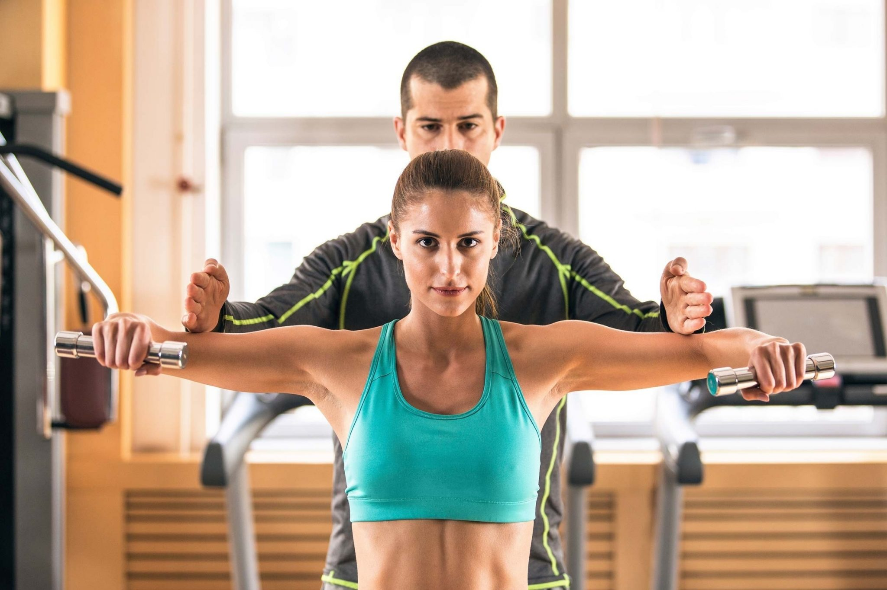
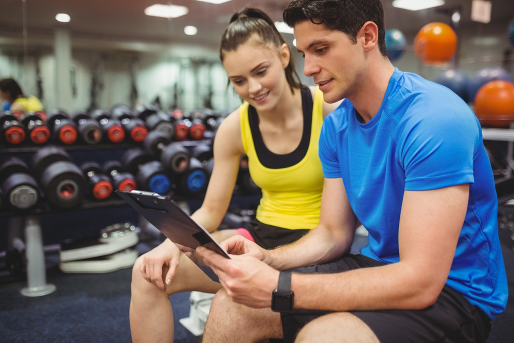

Какой вид упражнений выбрать?
Эффективные тренировки для похудения включают такие разновидности:
- Кардио. Это длительная физическая активность с небольшой интенсивностью, которая активизирует сердечный ритм. Сюда относится часовой бег или ходьба на специальном тренажере на протяжении 20 мин
- Силовые носят цикличный характер. Такие тренинги предусматривают занятия с утяжелителями или задействуют собственный вес.
- Интервальные проводят со сменой скорости и интенсивности. Это пробежки, велосипедная езда и ходьба. Меняя скоростной режим, занимаются около 20- 30 мин.
Успешная коррекция веса зависит не только от физической активности, но и от правильного питания. Людям, которые хотят похудеть рекомендуется соблюдать строгую диету. Исключить из рациона фастфуд и газировку. Меню разнообразят постным мясом фруктово-овощной продукцией.

Как тренироваться?
Если постоянно проводить спортивные тренировки для похудения, то лишний вес постепенно уйдет. Разработанные физические комплексы под силу сделать каждому.
Планирование физкультуры
Спортивные нагрузки планируют с учетом массы тела. Комплекс тренировок для похудения предусматривает 3-4 занятия в неделю по 45-60 мин за 1 р. Для достижения результата чередуют аэробику (велотренажер, бег) с силовыми задачами (приседание, качание пресса).
Необходимо определить свой ИМТ. При нормальных показателях спортивную интенсивность делают согласно приведенным нормам. Если имеется большое ожирение, то начинают проводить половину от указанного количества, а всю программу выполняют спустя 1 мес. Тучным людям рекомендуется заниматься в фитнес центре под наблюдением тренера.

Упражнения для новичков
Тренировка для похудения для начинающих не должна длиться долго, ее оптимальная длительность – 20 мин. Примерный план физических нагрузок:
- разминка 5 мин;
- простые приседания с вытягиванием вперед верхних конечностей;
- поочередные выпады обеими ногами, коленный сустав при этом сгибается под прямым углом;
- фишка заключается в осуществлении медленных приседаний, стопы стоят на ширине плеч;
- отжимания от пола в медленном темпе;
- качание пресса в положении лежа на полу;
- поднятие ягодиц, с одновременным сжатием мышц.
Во время активности разрешается делать короткие перерывы не больше 5 мин. В завершении сделать легкую растяжку.

Интенсивное жиросжигание
Для тех, кто имеет большой опыт тренингов, а также женщинам без лишнего веса, которые хотят уменьшить количество подкожных отложений подойдет короткий сплит. План жесткой тренировки для похудения:
- Пн – отжимания, жим от груди с утяжелителями;
- Вт и Ср – кардио занятия;
- Чт – становая тяга, мертвая тяга и выпады;
- Пт и Сб – аэробная активность (скакалка, плавание, фитнес, пробежки)
- Вс – отдых;
- Пн – прокачивание спины (тяга с гантелями, подтягивания на перекладине);
- Вт и Ср – аэробные упражнения;
- Чт – проработка мышц в области пресса (подтягивание ног на турнике, планка на фитболе);
- Пт и Сб – кардио занятия
- Вс – выходной.

Принципы похудения
Для достижения желаемого результата специалисты рекомендуют придерживаться таких правил:
- во время проведения тренировок не желательно делать перерывы;
- занятия нужно делать плавно и непрестанно;
- стартовать рекомендуется с 10 минутного тренинга, постепенно доводя время до 45 мин;
- каждую задачу делать правильно, четко придерживаясь правильной техники исполнения.

Характерные ошибки
Новичкам, которые проходят короткий курс эффективных упражнений для похудения важно не сделать ошибки. Самые существенные из них:
- Выгибание спинной части во время тяги, приседаний или выпадов. Такие нарушения приводят к повреждению межпозвоночных дисков.
- Порывы заниматься спортом ежедневно по несколько часов. Такой способ не поможет интенсивно сбросить лишние килограммы, а часто приводит к переутомляемости и остановке результатов.
- Обезвоживание организма. Некоторые девушки пьют мало воды во время тренингов. Из-за этого метаболизм замедляется. Соблюдать питьевой режим рекомендуется обязательно. Суточный объем питьевой воды составляет 1,5 – 2 л.
Принципы похудения
Для достижения желаемого результата специалисты рекомендуют придерживаться таких правил:
- во время проведения тренировок не желательно делать перерывы;
- занятия нужно делать плавно и непрестанно;
- стартовать рекомендуется с 10 минутного тренинга, постепенно доводя время до 45 мин;
- каждую задачу делать правильно, четко придерживаясь правильной техники исполнения.
Руководство по коррекции веса
Лучшие тренировки для похудения дают ожидаемый эффект и помогают сбросить вес за короткое время. Тем, кто только начинает путь по избавлению от лишних килограммов специалисты разработали специальный комплекс. Он заключается в выполнении таких шагов:
- врачебная консультация. Перед началом физической активности желательно проконсультироваться с врачом на цель выявления медицинских противопоказаний к проведению спортивных сеансов;
- постоянное движение. Основной фактор для формирования надежной базы для уменьшения веса – дополнительная ежедневная активность;
- совершать прогулки. Рекомендуется ходить каждый день не менее 40 мин. Гулять можно по парку, окрестным местам или по стадиону;
- тренинги с гантелями. Их можно выполнять в фитнес-центре или дома во время просмотра телевизора. Основное условие – ознакомиться с принципами их работы;
- придерживаться здорового режима питания. Чтобы сократить жировые отложения, рацион нужно ограничить по калориям, при этом организм должен получать необходимые вещества и достаточно энергии для поддержания активности.
Практическое видео
Тренировки для похудения помогут достигнуть желаемого результата и скорректировать вес. Если сначала не получается, не стоит опускать руки. Главное начать выполнять ежедневные нагрузки, а затем постепенно наращивать темп, и проявлять настойчивость.